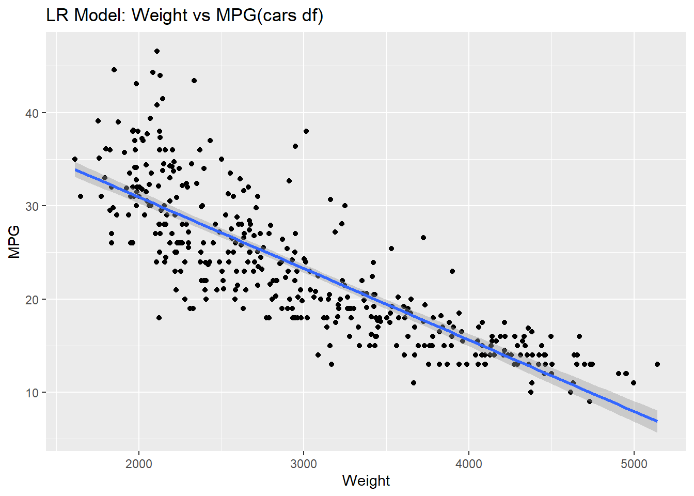
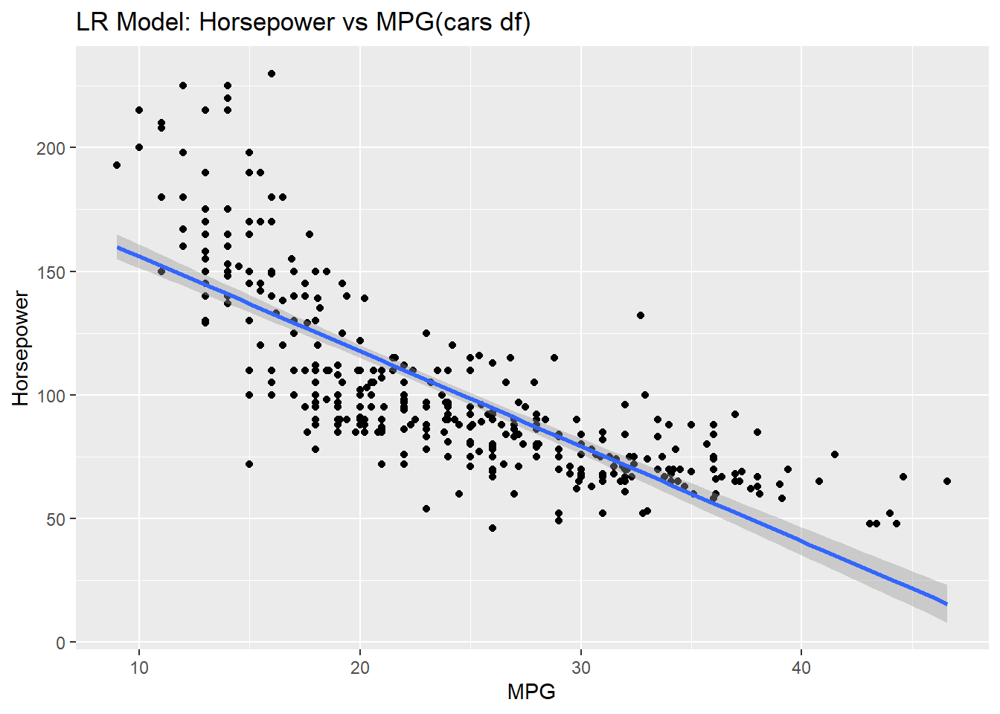
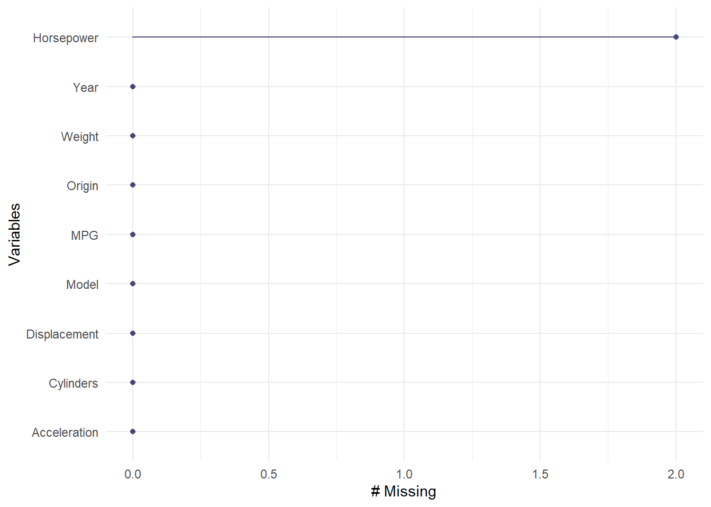
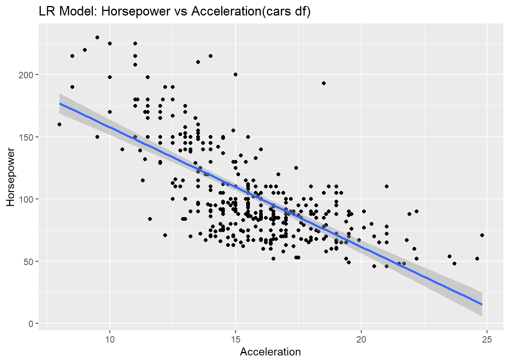
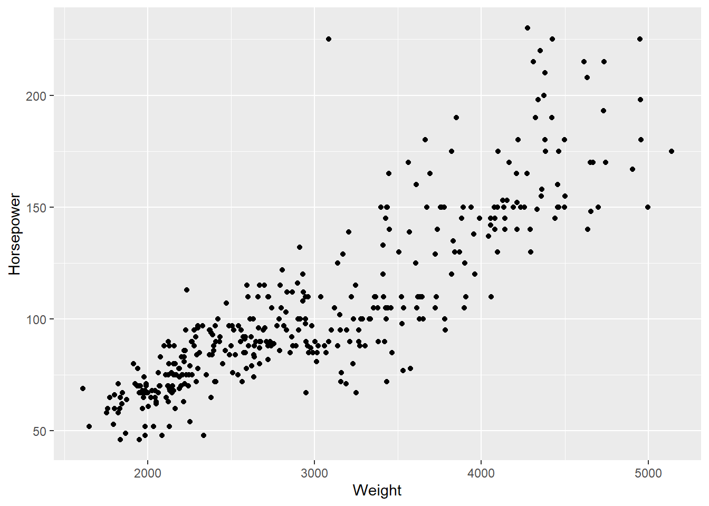
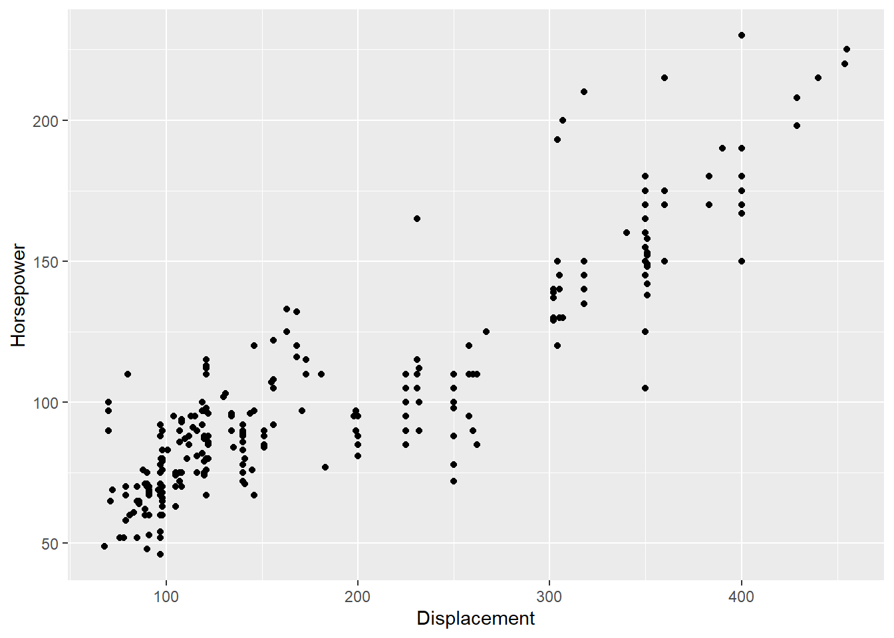

library(tidyverse)## -- Attaching packages --------------------------------------- tidyverse 1.3.0 --## v ggplot2 3.3.2 v purrr 0.3.4
## v tibble 3.0.3 v dplyr 1.0.2
## v tidyr 1.1.2 v stringr 1.4.0
## v readr 1.3.1 v forcats 0.5.0## -- Conflicts ------------------------------------------ tidyverse_conflicts() --
## x dplyr::filter() masks stats::filter()
## x dplyr::lag() masks stats::lag()library(ggplot2)
library(dplyr)
library(tidyr)
library(e1071)
library(GGally)## Registered S3 method overwritten by 'GGally':
## method from
## +.gg ggplot2library(naniar)cars_df <- read_csv(file.choose())## Parsed with column specification:
## cols(
## Model = col_character(),
## MPG = col_double(),
## Cylinders = col_double(),
## Displacement = col_double(),
## Horsepower = col_double(),
## Weight = col_double(),
## Acceleration = col_double(),
## Year = col_double(),
## Origin = col_character()
## )cars_df.fit <- lm(MPG~Weight, data=cars_df)
summary(cars_df.fit)##
## Call:
## lm(formula = MPG ~ Weight, data = cars_df)
##
## Residuals:
## Min 1Q Median 3Q Max
## -12.0008 -2.7684 -0.3342 2.1245 16.4920
##
## Coefficients:
## Estimate Std. Error t value Pr(>|t|)
## (Intercept) 46.2734424 0.7974987 58.02 <2e-16 ***
## Weight -0.0076613 0.0002577 -29.73 <2e-16 ***
## ---
## Signif. codes: 0 '***' 0.001 '**' 0.01 '*' 0.05 '.' 0.1 ' ' 1
##
## Residual standard error: 4.332 on 392 degrees of freedom
## Multiple R-squared: 0.6927, Adjusted R-squared: 0.6919
## F-statistic: 883.6 on 1 and 392 DF, p-value: < 2.2e-16confint(cars_df.fit)## 2.5 % 97.5 %
## (Intercept) 44.705532760 47.841351974
## Weight -0.008168061 -0.007154609beta_1_hat <- cars_df.fit$coefficients[2]
tstat = cars_df.fit$coefficients[2]/0.0002577 #beta_1_hat / SE(beta_1_hat)
pvalue = (pt(tstat,7)) * 2 # Mult by 2 since 2 sided test
tstat## Weight
## -29.72967pvalue## Weight
## 1.25541e-08###Question 1a
cars_df %>% ggplot(aes(x=Weight, y=MPG)) + geom_point() + ggtitle("LR Model: Weight vs MPG(cars df)") + geom_smooth(method = "lm")## `geom_smooth()` using formula 'y ~ x'
Model_1 <- lm(MPG ~ Weight,data = cars_df)
summary(Model_1)##
## Call:
## lm(formula = MPG ~ Weight, data = cars_df)
##
## Residuals:
## Min 1Q Median 3Q Max
## -12.0008 -2.7684 -0.3342 2.1245 16.4920
##
## Coefficients:
## Estimate Std. Error t value Pr(>|t|)
## (Intercept) 46.2734424 0.7974987 58.02 <2e-16 ***
## Weight -0.0076613 0.0002577 -29.73 <2e-16 ***
## ---
## Signif. codes: 0 '***' 0.001 '**' 0.01 '*' 0.05 '.' 0.1 ' ' 1
##
## Residual standard error: 4.332 on 392 degrees of freedom
## Multiple R-squared: 0.6927, Adjusted R-squared: 0.6919
## F-statistic: 883.6 on 1 and 392 DF, p-value: < 2.2e-16confint(Model_1)## 2.5 % 97.5 %
## (Intercept) 44.705532760 47.841351974
## Weight -0.008168061 -0.007154609cars_df_2 = cars_df %>% mutate(Wt_transform = Weight^2)
Model_2 <- lm(MPG ~ Weight + Wt_transform,data = cars_df_2)
summary(Model_2)##
## Call:
## lm(formula = MPG ~ Weight + Wt_transform, data = cars_df_2)
##
## Residuals:
## Min 1Q Median 3Q Max
## -12.6529 -2.7284 -0.3205 1.8205 16.0652
##
## Coefficients:
## Estimate Std. Error t value Pr(>|t|)
## (Intercept) 6.227e+01 2.990e+00 20.828 < 2e-16 ***
## Weight -1.848e-02 1.970e-03 -9.382 < 2e-16 ***
## Wt_transform 1.692e-06 3.056e-07 5.536 5.67e-08 ***
## ---
## Signif. codes: 0 '***' 0.001 '**' 0.01 '*' 0.05 '.' 0.1 ' ' 1
##
## Residual standard error: 4.177 on 391 degrees of freedom
## Multiple R-squared: 0.715, Adjusted R-squared: 0.7136
## F-statistic: 490.5 on 2 and 391 DF, p-value: < 2.2e-16confint(Model_2)## 2.5 % 97.5 %
## (Intercept) 5.639102e+01 6.814689e+01
## Weight -2.235054e-02 -1.460615e-02
## Wt_transform 1.090969e-06 2.292468e-06###leave one out cross validation
#Model 1
pred_error_sq <- c(0)
for(i in 1:dim(cars_df)[1]) {
cars_train <- cars_df[-i,] # loop to leave one out each time
fit <- lm(MPG ~ Weight,data = cars_train)
mpg_i <- predict(fit, data.frame(Weight = cars_df[i,6])) # predict each iteration observation
pred_error_sq <- pred_error_sq + (cars_df[i,2] - mpg_i)^2 # cummulate squared prediction errors
}
SSE = var(cars_df$MPG) * ((dim(cars_df)[1])-1) #sum of squared errors
R_squared <- 1 - (pred_error_sq/SSE) # goodness of fit
R_squared## MPG
## 1 0.6898232RMSE_2 = sqrt(pred_error_sq / (dim(cars_df)[1]))
RMSE_2## MPG
## 1 4.341388# Model 2
cars_df_2 = cars_df %>% mutate(Wt_transform = Weight^2)
pred_error_sq2 <- c(0)
for(i in 1:dim(cars_df_2)[1]) {
cars_train <- cars_df_2[-i,]
fit <- lm(MPG ~ Weight + I(Weight^2), data = cars_train)
mpgs <- predict(fit, data.frame(Weight = cars_df_2[i,6]))
pred_error_sq2 <- pred_error_sq2 + (cars_df_2[i,2] - mpgs)^2
}
SSE = var(cars_df_2$MPG) * ((dim(cars_df_2)[1])-1) #sum of squared errors
R_squared <- 1 - (pred_error_sq2/SSE) # Measure for goodness of fit
R_squared## MPG
## 1 0.7114874RMSE_3 = sqrt((pred_error_sq2 / dim(cars_df_2)[1]))
RMSE_3## MPG
## 1 4.187032RMSE.list <- data.frame(RMSE_2=RMSE_2,RMSE_3=RMSE_3)
RMSE.list## MPG MPG.1
## 1 4.341388 4.187032# Using model 2 let's estimate the mean mpg of the subpopulaiton of cars that weigh 2000lbs
fit_2k <- lm(MPG ~ Weight + I(Weight^2),data = cars_df)
car_2k <- data.frame(Weight = 2000)
car2k_predict <- predict(fit_2k, newdata = car_2k, interval = "confidence")
car2k_predict## fit lwr upr
## 1 32.07914 31.33136 32.82691###Question 3. a)Using the cars.csv dataset, We would like to assess the relationship (interpret slope parameter) between mpg and horsepower. ###Notice that some of the horsepowers are missing.
b)Impute (predict and insert) the missing horsepowers by fitting a regression model. c)You may use any of the variables as regressors EXCEPT for mps (since we will later be using horsepower to predict mpg.) d)Assess the relationship between the mpg and the slope. Make sure and include estimates of your uncertainty (ie. Confidence intervals.) d)Use your model and imputed data to estimate the mean mpg for a car with 250 horsepower.
#3a)
cars_df %>% ggplot(aes(x=MPG, y=Horsepower)) + geom_point()+
ggtitle("LR Model: Horsepower vs MPG(cars df)") + geom_smooth(method = "lm")## `geom_smooth()` using formula 'y ~ x'## Warning: Removed 2 rows containing non-finite values (stat_smooth).## Warning: Removed 2 rows containing missing values (geom_point).
#how many rows are missing.
summary(cars_df)## Model MPG Cylinders Displacement Horsepower Weight Acceleration Year
## Length:394 Min. : 9.00 Min. :3.000 Min. : 68.0 Min. : 46.0 Min. :1613 Min. : 8.00 Min. :70.00
## Class :character 1st Qu.:17.12 1st Qu.:4.000 1st Qu.:105.0 1st Qu.: 75.0 1st Qu.:2226 1st Qu.:13.80 1st Qu.:73.00
## Mode :character Median :23.00 Median :4.000 Median :151.0 Median : 93.5 Median :2804 Median :15.50 Median :76.00
## Mean :23.47 Mean :5.464 Mean :194.1 Mean :104.5 Mean :2976 Mean :15.55 Mean :76.01
## 3rd Qu.:29.00 3rd Qu.:8.000 3rd Qu.:265.8 3rd Qu.:126.0 3rd Qu.:3612 3rd Qu.:17.07 3rd Qu.:79.00
## Max. :46.60 Max. :8.000 Max. :455.0 Max. :230.0 Max. :5140 Max. :24.80 Max. :82.00
## NA's :2
## Origin
## Length:394
## Class :character
## Mode :character
##
##
##
## gg_miss_var(cars_df)
# Plots to see associations
cars_df %>% ggplot(aes(x=Acceleration, y=Horsepower)) + geom_point()+
ggtitle("LR Model: Horsepower vs Acceleration(cars df)") + geom_smooth(method = "lm") #looks better than rest## `geom_smooth()` using formula 'y ~ x'## Warning: Removed 2 rows containing non-finite values (stat_smooth).## Warning: Removed 2 rows containing missing values (geom_point).
cars_df %>% ggplot(aes(x=Weight, y=Horsepower)) + geom_point() ## Warning: Removed 2 rows containing missing values (geom_point).
cars_df %>% ggplot(aes(x=Displacement, y=Horsepower)) + geom_point()## Warning: Removed 2 rows containing missing values (geom_point).
# corresponding acceleration values for missing horsepower rows
hp_miss <- cars_df %>% filter(is.na(Horsepower))
#fit the model
fit = lm(Horsepower~Acceleration, data=cars_df)
# Create the list for the missing values to be predicted
hp_acc_missing <- c(hp_miss$Acceleration[1], hp_miss$Acceleration[2])
# Create data frame with correct column names
missingData <- data.frame(Acceleration = hp_acc_missing)
pred_hp <- predict(fit, newdata = missingData)
pred_hp## 1 2
## 101.98211 56.78913# # Insert our predicted horsepower
# hp_miss_insert1 <- hp_miss$Horsepower[1] <- pred_hp[1]
# hp_miss_insert1 <- hp_miss$Horsepower[2] <- pred_hp[2]
#
# cars_df[hp_miss$Horsepower[1]] <- pred_hp[1]
# cars_df[hp_miss$Acceleration[1],]$Horsepower <- pred_hp[2]
#
# cars_df[hp_miss_insert1[]]
#
# # Insert our predicted horsepower
# cars_df[hp_miss[1],]$Horsepower <- pred_hp[1]
# cars_df[hp_miss[2],]$Horsepower <- pred_hp[2]
#
#
#
# # Sanity check we have no more missing values
# summary(cars_df)# hp_new <- data.frame(Horsepower = 250)
# pred_hp2 <- predict(fit, newdata = hp_new)
# pred_hp
# new_fit = lm(MPG~Horsepower+Acceleration, data=cars_df)
# fit = lm(Horsepower~Acceleration, data=cars_df)
# hp_250 <- predict(new_fit, newdata = data.frame(Horsepower = 250, Acceleration=25), interval = "confidence")
# hp_250